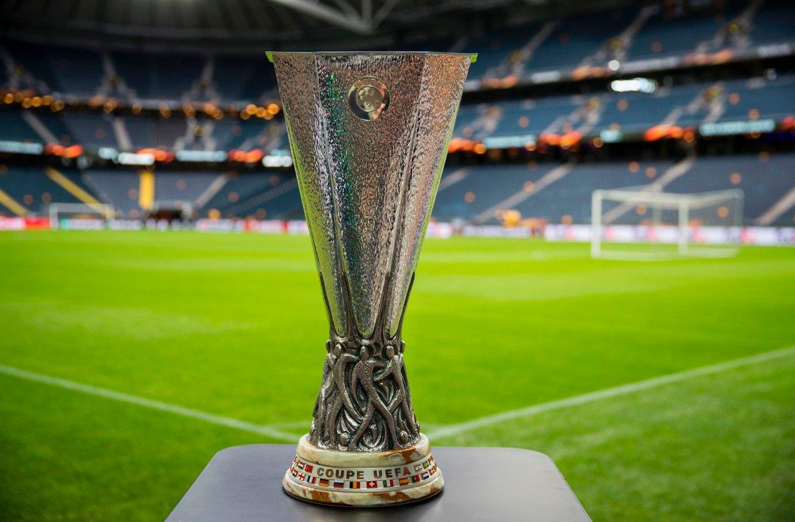

La Liga Europa de la UEFA(en inglés y oficialmente: UEFA Europa League), originariamente denominada Copa de la UEFA, es una competición continental de clubes organizada por la Unión de Asociaciones Europeas de Fútbol (UEFA), considerada la segunda más prestigiosa de Europa, tras la Liga de Campeones y una de las tres competiciones continentales organizadas por la UEFA, junto a la Liga Conferencia.
La competición fue inaugurada en la temporada 1971-72, como medida de expansión para los clubes que no tomaban parte en las competiciones vigentes de Copa de Europa o Recopa de Europa, reservadas a los campeones de cada país. Se tomó a la Copa Internacional de Ciudades en Feria, competición ajena al organismo continental, como referente en su constitución, momento en el que esta dejó de existir.La temporada 1999-2000 reemplazó a la citada Recopa de Europa, en una reestructuración de las competiciones continentales, la cual disputaban los campeones nacionales de copa. Diez años después, en la temporada 2009-10, tomó su actual denominación tras integrar a la Copa Intertoto, un torneo estival clasificatorio para esta competición.Desde la edición 2014-15, su campeón obtiene plaza para disputar la siguiente edición de la Liga de Campeones.
El ganador de esta competición, disputa la Supercopa de Europa ante el vencedor de la Liga de Campeones, derecho que antes recaía en el vencedor de la Recopa. El vigente campeón es el Sevilla Fútbol Club quien ganó su sexto título, manteniendo su posición de más laureado, tras vencer al Inter de Milán, segundo club más laureado junto con Juventus Football Club, Liverpool Football Club y Atlético de Madrid, con tres títulos cada uno.La federación española es la que más campeonatos ha logrado con once, seguido por los nueve de Italia e Inglaterra, entre los 972 participantes históricos de la competición.

Sistema de competición
Participantes y formato
Participan en este torneo 193 equipos: Los campeones de las respectivas competiciones de copa de cada país, los mejores clasificados de las distintas ligas, que quedaron por detrás de aquellos que lo hicieron para la Liga de Campeones (Champions League), y algunos procedentes de distintas fases de la misma Liga de Campeones que resultaron eliminados. Además, se suman tres equipos más según el Ranking de Fair Play de la UEFA. Desde la temporada 1971/72 sólo participaron 64 equipos a eliminación directa, antes de proceder con los distintos cambios en la competición.
Desde la temporada 1997/98 la final se juega a un solo partido en campo neutral.
Desde la temporada 1999/2000 se permite la participación de los distintos campeones de copa (tras la desaparición de la Recopa), además de la inclusión de los mejores terceros de la Liga de Campeones.
En la campaña 2004/05 se introdujo la fase de grupos, con 40 equipos divididos en ocho grupos.
En la campaña 2009/10 aumenta el número de participantes de la fase grupal, llegando a 48 equipos divididos en doce grupos.
En las eliminatorias directas a ida y vuelta cae eliminado aquel equipo que haya marcado menos goles tras los dos partidos. En caso de que ambos conjuntos hubieran conseguido el mismo número de tantos, lograría pasar a la siguiente ronda aquel que hubiera encajado menos goles en su feudo. Si esto no dilucidase un ganador, se jugarían una prórroga compuesta de dos tiempos de 15 minutos cada uno al final del partido de vuelta. Si durante los periodos extra ambos equipos marcan el mismo número de goles, se volvería a aplicar la regla del gol de visitante, con la que se clasificaría para la siguiente ronda aquel equipo que jugase ese partido de vuelta en calidad de visitante. En el supuesto que la prórroga transcurriese sin goles se recurriría, finalmente a la tanda de penaltis.
Durante la fase de grupos cada victoria suma 3 puntos; cada empate, 1; y una derrota, 0. Pasan a la siguiente ronda los dos primeros de cada grupo (24 equipos en total), que junto con los 8 terceros de la Liga de Campeones de la UEFA conforman los 32 participantes de los dieciseisavos de final. Si dos o más equipos cuentan con el mismo número de puntos dentro del mismo grupo, los siguientes criterios determinan el orden de clasificación (en orden descendente):
Mayor número de puntos obtenidos en los partidos del grupo jugados entre los equipos en cuestión
Mayor diferencia de goles en los partidos del grupo jugados entre los equipos en cuestión
Mayor número de goles marcados fuera de casa en los partidos del grupo jugados entre los equipos en cuestión
Mayor diferencia de goles en todos los partidos del grupo
Mayor número de goles marcados en todos los partidos del grupo
Mejor coeficiente (conseguido a lo largo de los últimos 5 años en la Liga de Campeones y la Liga Europa).